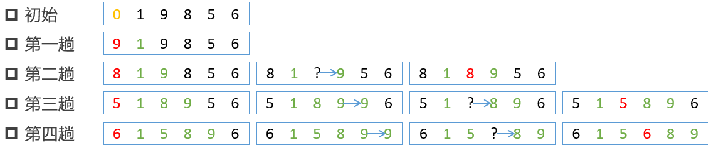

插入排序
插入排序
- 每一趟都要把待排序数放到有序区中合适的插入位置

1. 核心算法
- 结果可为升序或降序排列，默认升序排列。以升序为例
- 扩大有序区，减小无序区。图中绿色部分就是增大的有序区，黑色部分就是减小的无序区
- 增加一个哨兵位，图中最左端红色数字，其中放置每一趟待比较数值
- 将哨兵位数值与有序区数值从右到左依次比较，找到哨兵位数值合适的插入点
2. 算法实现
- 增加哨兵位
- 为了方便，采用列表头部索引0位置插入哨兵位
- 每一次从有序区最右端后的下一个数，即无序区最左端的数放到哨兵位
- 比较与挪动
- 从有序区最右端开始，从右至左依次与哨兵比较
- 比较数比哨兵大，则右移一下，换下一个左边的比较数
- 直到找到不大于哨兵的比较数，这是把哨兵插入到这个数右侧的空位即可
1 | m_list = [ |
3. 总结
- 最好情况，正好是升序排列，比较迭代n-1次
- 最差情况，正好是降序排列，比较迭代1,2,…,n-1即 n(n-1)/2，数据移动非常多
- 使用两层嵌套循环，时间复杂度O(n^2)
- 稳定排序算法
- 如果待排序序列R中两元素相等，即Ri等于Rj，且i < j ，那么排序后这个先后顺序不变，这种排序算法就称为稳定排序
- 已经学习过的排序算法哪些是稳定排序，考虑1、1、2排序
- 使用在小规模数据比较
- 优化
- 如果比较操作耗时大的话，可以采用二分查找来提高效率，即二分查找插入排序
4. 排序稳定性
- 冒泡排序，相同数据不交换，稳定
- 直接选择排序，相同数据前面的先选择到，排到有序区，不稳定
- 直接插入排序，相同数据不移动，相对位置不变，稳定
 微信
微信 支付宝
支付宝
相关推荐


评论